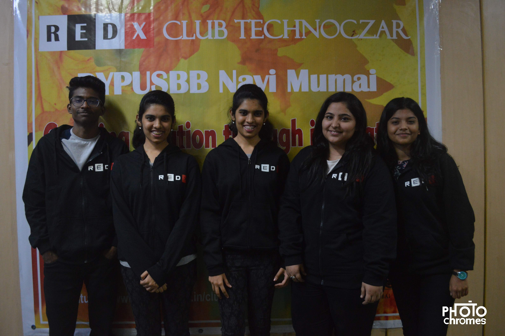
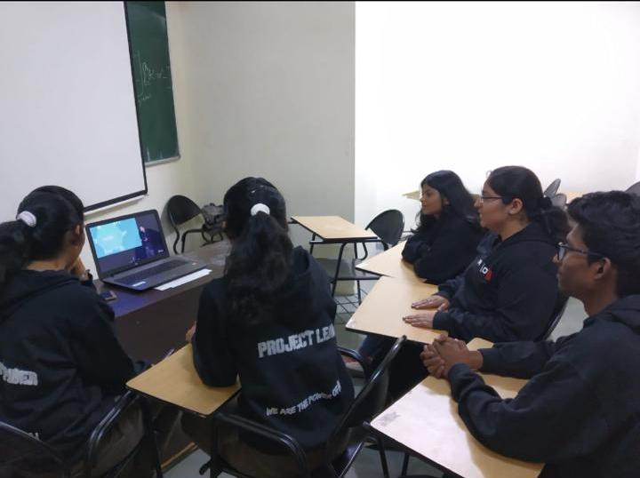

Lenessa Colacco and Team members
Working on :
Combating the issue of waste segregation using artificial intelligence.


Sometimes, one can just come up with an idea by holding onto an adjective. It was one of the best guiding video that I and my team have come across. Ramesh Sir’s remarks triggered new ideas that would be beneficial for our future generations. He spoke about how the digital technologies are impacting the physical world and leading to different conditions. New technologies and the digitalized people which are coming on board are creating billion dollar opportunities. We should think and move linearly and not leniently, with this he associated various examples. MIT Media Lab is working on various projects and in India they have club that holds the same known as “Redx Club”.
The basic segregation process starts at home itself,but the awareness regarding the same is not done on a large enough scale.Lack of awareness about the disposal of sanitary waste generated in rural areas.The mode of segregation of waste varies between different municipal corporations with no proper and efficient method being implemented on large scale uniformly.
20th June 2019 1.00 PM As a part of the project on ‘Segregation of Waste using AI’ a field visit was conducted to Daily Dump Organisation in Airoli, Navi Mumbai Mr. Prem Bhatia at Daily Dump gave his valuable time to discuss the project and also answer the survey questions. He also shared his organisation’s activities on the various methods of waste management.

28 th June 2019 11:00 AM
Regarding the project -Segregation of solid waste using AI a survey was conducted via call
with Mr. Rajesh Gupta member of an NGO Evergreen Recycle karo who work in the field of
waste management. The conversation was around 15 minutes long where gave his precious time
to guide us and also suggest some ideas for our project.
He first gave an introduction about his NGO and the tasks they have undertaken regarding waste
management and how they work as an NGO.
He mainly emphasized on segregating the waste on smaller scales as it would be easier, simpler
and also more efficient.
Talking about the project he said that

June 28, 2019 5:00 pm
During the fourth week of the project regarding segregation of waste using Artificial Intelligence
various survey were conducted regarding the concern of the project. For the same a survey was
conducted by via call with the social manager Mr. Aniket Jhadav of an NGO ‘Antony waste
handling cell limited’ involved in sewage and waste disposal and sanitation.
The first part of the conversation was related to the NGO, after which he asked the reason for the
project and the basic idea of the project. In later part of the conversation few points were
discussed regarding the establishment, necessity and functioning of the project.
Discussion and conclusion of the survey:
June 28, 2019
An interactive session was conducted with the representative of the Earth5R
Organization during which we had a discussion on the topic of “segregation of
waste using artificial intelligence”.
The first part of the discussion focused on the various sustainable development
program and initiatives that they undertake and perform while the latter half
revolved around the idea of using artificial intelligence for waste management.
Key points of the survey:-